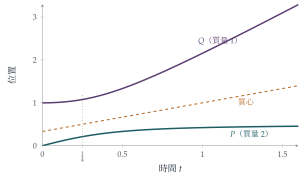

STEP III 2004，第 11 題
繼續之前，請先閱讀題目（原題為英文）。題目載於 STEP Support Programme 的題目資料庫： step.maths.org/questions/04-s3-q11
引子
兩個物體互相吸引或排斥：地球與月球、兩顆恆星、一個質子與一個電子。每個物體的運動都取決於另一個物體的位置，因此兩條方程是耦合（coupled）的，看來非要同時求出兩個運動不可。牛頓（Newton）的重大簡化在於更換變數：不用兩個位置，而改用質心（centre of mass）和間距（separation）。質心的運動彷彿完全不受力，而間距的運動則像一個質量經過修正的單一質點。一個難題就此化為兩個易題。
本題就兩個在直線上運動的質點，實際做一次這樣的分離。過程中還有一個小小的奇蹟：間距原來是 \(t\) 的二次式的平方根，而箇中原因與題目本身的設定毫無關係，卻完全源於平面上的運動。
動筆之前
寫出每個質點的牛頓第二定律（Newton’s second law）。每個力朝哪個方向作用？
這個力是排斥力，所以它把（左邊的）\(P\) 推向左，把（右邊的）\(Q\) 推向右： \[2\ddot x_1 = -\frac{2}{z^3}, \qquad 1 \cdot \ddot x_2 = +\frac{2}{z^3}.\] 這兩條方程是耦合的，因為每一條都含有 \(z = x_2 - x_1\)。
逐步解題
階段 1 間距
兩條方程的哪一個組合只含有 \(z\)？
相減：\(\ddot z = \ddot x_2 - \ddot x_1 = \frac{2}{z^3} + \frac{1}{z^3} = \frac{3}{z^3}\)。■
間距的表現就像一個質量為 \(\frac23\) 的單一質點，受力 \(\frac{2}{z^3}\) 推動。\(\frac23 = \frac{2 \times 1}{2 + 1}\) 這個數就是約化質量（reduced mass）\(\frac{m_1m_2}{m_1 + m_2}\)。
階段 2 間距的能量
利用 \(\ddot z = v\frac{\mathrm{d}v}{\mathrm{d}z}\)，分離變數然後積分。\(z\) 和 \(v = \dot z\) 的初始值是多少？
由 \(v\frac{\mathrm{d}v}{\mathrm{d}z} = \frac{3}{z^3}\)，積分得 \(\frac12v^2 = -\frac{3}{2z^2} + C\)。起初 \(z = 1\) 而 \(\dot z = \dot x_2 - \dot x_1 = 0 - 1 = -1\)，所以 \(\frac12 = -\frac32 + C\)，得 \(C = 2\)： \[v^2 = 4 - \frac{3}{z^2}.\] （這就是間距的能量守恆（conservation of energy）：以每單位約化質量計，動能加上勢能 \(\frac{3}{2z^2}\) 是常數。）
階段 3 出奇簡單的解
要證明的答案是 \(z^2 = 4t^2 - 2t + 1\)。所以不妨考慮 \(w = z^2\)，而不是 \(z\)。以 \(w\) 表示，\(\dot w^2\) 是甚麼？
設 \(w = z^2\)，則 \(\dot w = 2z\dot z\)，所以 \[\dot w^2 = 4z^2\dot z^2 = 4z^2\Bigl(4 - \frac{3}{z^2}\Bigr) = 16w - 12.\] 求導得 \(2\dot w\ddot w = 16\dot w\)，所以（只要 \(\dot w \neq 0\)）\(\ddot w = 8\)。因此 \(w\) 是 \(t\) 的二次式：\(w = 4t^2 + \alpha t + \beta\)。起初 \(w = 1\) 而 \(\dot w = 2z\dot z = -2\)，所以 \(\beta = 1\) 及 \(\alpha = -2\)： \[z = \sqrt{4t^2 - 2t + 1}. \qed\] （你可以直接驗證：\(\dot w^2 = (8t - 2)^2 = 64t^2 - 32t + 4 = 16(4t^2 - 2t + 1) - 12\)。）兩個質點在 \(t = \frac14\) 時最接近，此時 \(z = \frac{\sqrt3}{2}\)，其後便永遠愈離愈遠。
階段 4 質心
\(2x_1 + x_2\) 滿足甚麼方程？為甚麼它是最自然要考慮的組合？
把兩條運動方程相加，\(2\ddot x_1 + \ddot x_2 = -\frac{2}{z^3} + \frac{2}{z^3} = 0\)。兩個力大小相等、方向相反（牛頓第三定律），所以總動量（momentum）\(2\dot x_1 + \dot x_2\) 是常數。它的初始值是 \(2 \times 1 + 0 = 2\)，而 \(2x_1 + x_2\) 的初始值是 \(1\)，所以 \[2x_1 + x_2 = 1 + 2t.\] 質心位於 \(\frac{2x_1 + x_2}{3}\)，以速率 \(\frac23\) 勻速移動。再結合 \(x_2 - x_1 = z\)， \[x_1 = \frac{1 + 2t - \sqrt{4t^2 - 2t + 1}}{3}, \qquad x_2 = \frac{1 + 2t + 2\sqrt{4t^2 - 2t + 1}}{3}. \qed\]

回顧
更換變數以解除耦合。兩條方程之差只含有 \(z\)；加權之和只涉及質心。
能量積分。寫成 \(\ddot z = v\frac{\mathrm{d}v}{\mathrm{d}z}\)，便把二階方程化為一階方程：這就是能量守恆。
更換未知量。\(z\) 的方程不好處理；\(z^2\) 的方程卻簡單不過。
背後的數學
為甚麼 \(z^2\) 是二次式
對任何形如 \(\ddot z = k/z^3\) 的力律，同樣的計算都給出 \(\frac{\mathrm{d}^2}{\mathrm{d}t^2}(z^2) = 2\dot z^2 + 2z\ddot z = 2\dot z^2 + \frac{2k}{z^2} =\) 常數，因為 \(\frac12\dot z^2 + \frac{k}{2z^2}\) 正是守恆的能量。所以 \(z^2\) 必定是 \(t\) 的二次式。為甚麼？
隱藏的原因是這樣的。設想一個質點在平面上自由運動，即沿直線以恆定速率前進。它與原點的距離 \(r\) 滿足 \(r^2 = (\text{一個二次式，變數為 } t)\)，因為 \(r^2 = (x_0 + at)^2 + (y_0 + bt)^2\)。而在極坐標（polar coordinates）中，它的徑向運動方程是 \(\ddot r - r\dot\theta^2 = 0\)；由於角動量（angular momentum）\(h = r^2\dot\theta\) 是常數，方程變成 \[\ddot r = \frac{h^2}{r^3}.\] 立方反比的排斥力，正正就是隱藏的角向運動所產生的離心（centrifugal）效應。在我們的問題中，\(z^2 = 4t^2 - 2t + 1 = (2t - \frac12)^2 + \frac34\) 是某一點與原點距離的平方，該點以速率 \(2\) 沿一條直線運動，而這條直線與原點的距離為 \(\frac{\sqrt3}{2}\)。一維上互相排斥的兩個質點，就是二維自由運動的影子。
二體問題
只要兩個物體之間的力僅取決於它們的間距，並沿兩者的連線作用，本題的方法便適用，一維如是，三維亦如是。質心作勻速運動，而間距向量 \(\mathbf{r}\) 服從 \(\mu\ddot{\mathbf{r}} = \mathbf{F}(\mathbf{r})\)，其中 \(\mu = \frac{m_1m_2}{m_1 + m_2}\)。對引力而言，這就是開普勒問題（Kepler problem），由牛頓在《自然哲學的數學原理》（Principia）中解決：間距描出的軌跡是橢圓、拋物線或雙曲線。地球和太陽都繞着它們的共同質心運行，而這個質心位於太陽內部；地球和月球則繞着距離地心約 \(4700\) km 的一點運行，這一點在地球內部，但離地心頗遠，所以地球每月都會擺動一次。天文學家正是靠偵測恆星的這種擺動，來尋找環繞其他恆星的行星。
1969 年，Francesco Calogero 研究直線上多個質點以平方反比勢（即立方反比力）互相排斥的情況，發現無論質點數目多少，這個系統竟然都可以精確求解。Jürgen Moser 在 1975 年解釋了箇中原因，他用上一個矩陣，其特徵值（eigenvalues）在矩陣隨時間演化時保持不變：這就是 第 7.7 節 的 Lax 對（Lax pairs）。Calogero–Moser 系統如今是可積系統（integrable system）的核心例子，所謂可積系統，就是守恆量多得足以完全求解的系統；它把力學與隨機矩陣、量子場論及孤立子理論聯繫起來。
思維技巧
當兩個量互相耦合時，找出不耦合的組合。和與差，配上適當的常數作加權，往往能把問題拆成互相獨立的部分。
質心坐標與相對坐標是第一個例子。到了大學，同一個想法會以矩陣對角化（簡正模態（normal modes），第 11.2 節）、偏微分方程的分離變數法等形式出現，也見於量子力學。
延伸練習
繩上的兩個質量。試做 STEP III 2023，第 9 題 （載於 OCR 提供下載的 2023 年試卷 zip 檔案內）。題目考察以繩相連的兩個質點，並利用質心把運動分離。留意其中一個質點何時向後移動。
吸引力。把力改為吸引力 \(\frac{2}{z^3}\)，重做本題。證明 \(z^2\) 仍然是 \(t\) 的二次式，並求兩個質點何時相撞。
隱藏的平面。就題目中的運動，求出平面上與原點距離為 \(z(t)\) 的那條直線運動軌跡，以及掃過的角 \(\theta(t)\)。驗證 \(z^2\dot\theta\) 是常數，且 \((z^2\dot\theta)^2 = 3\)。
開普勒第三定律。兩顆質量分別為 \(m_1\) 和 \(m_2\) 的恆星相距 \(a\)，在引力作用下繞它們的質心作圓周運動。證明週期 \(T\) 滿足 \(T^2 = \frac{4\pi^2a^3}{G(m_1 + m_2)}\)。
延伸閱讀
John Taylor, Classical Mechanics（University Science Books），第 8 章。二體問題、約化質量與軌道。
Daniel Kleppner & Robert Kolenkow, An Introduction to Mechanics（Cambridge University Press），第 10 章，論有心力。
Francesco Calogero, Classical Many-Body Problems Amenable to Exact Treatments（Springer）。給有志挑戰的讀者：精確可解系統的世界。